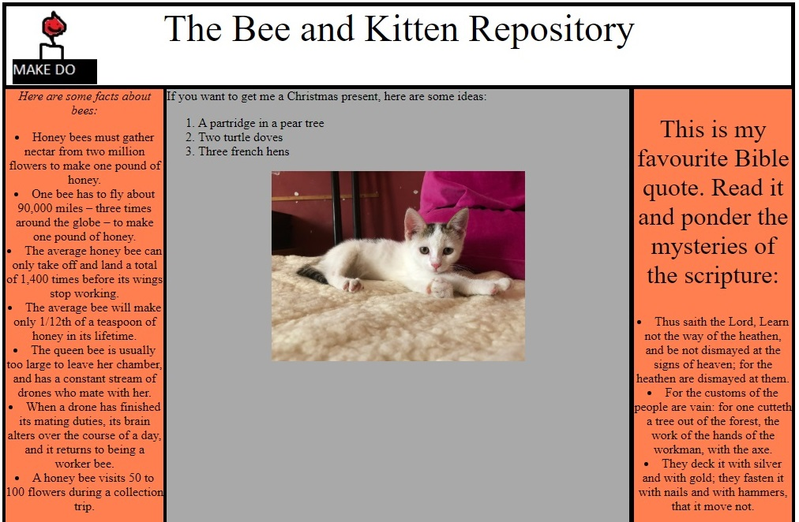

The Bee and Kitten Repository
A page with a deliberately DIY aesthetic, containing kittens, facts about bees, and quotes. Created with HTML
and Flexbox.

My new challenges in creating the Bee and Kitten Repository were:
- Learning how Flexbox works; this was my first Flexbox project.
In designing the Bee and Kitten Repository, I channeled the kind of page you could make for yourself in the
early days of the internet. These were usually about the creator's quite specific interests and not terribly
pretty to look at, hosted on such legendary services as geocities and angelfire.
-
I went with an intentionally odd colour scheme: orange, grey, and white.
-
The site's logo is clearly hand-made, probably in MS Paint, and doesn't really make sense. (It's a smiling candle above the words MAKE DO.)
-
To reflect the odd choice of interests, the Repository contains facts about bees, ideas for a Christmas present, a picture of a kitten, and a Bible verse. Some of the facts about bees are even incorrect!
-
Finally, there's a faux-philosophical quote about the human brain at the bottom of the page, as well as a link to Google, which the page helpfully explains is a search engine - perhaps, back in the day, such an explanation would have been necessary.